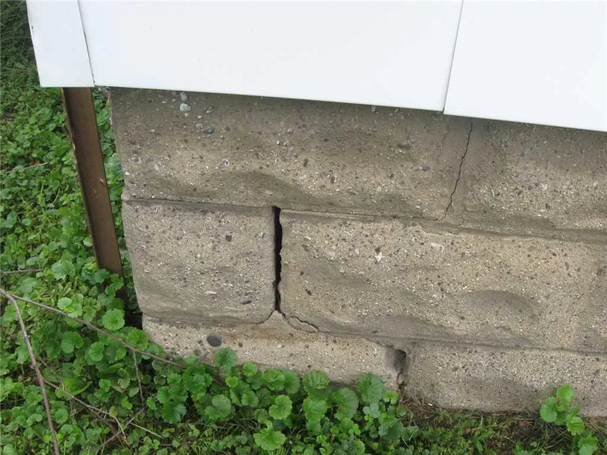
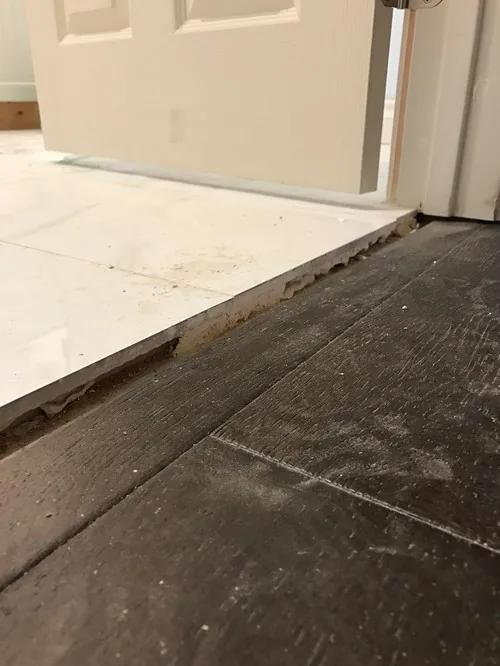
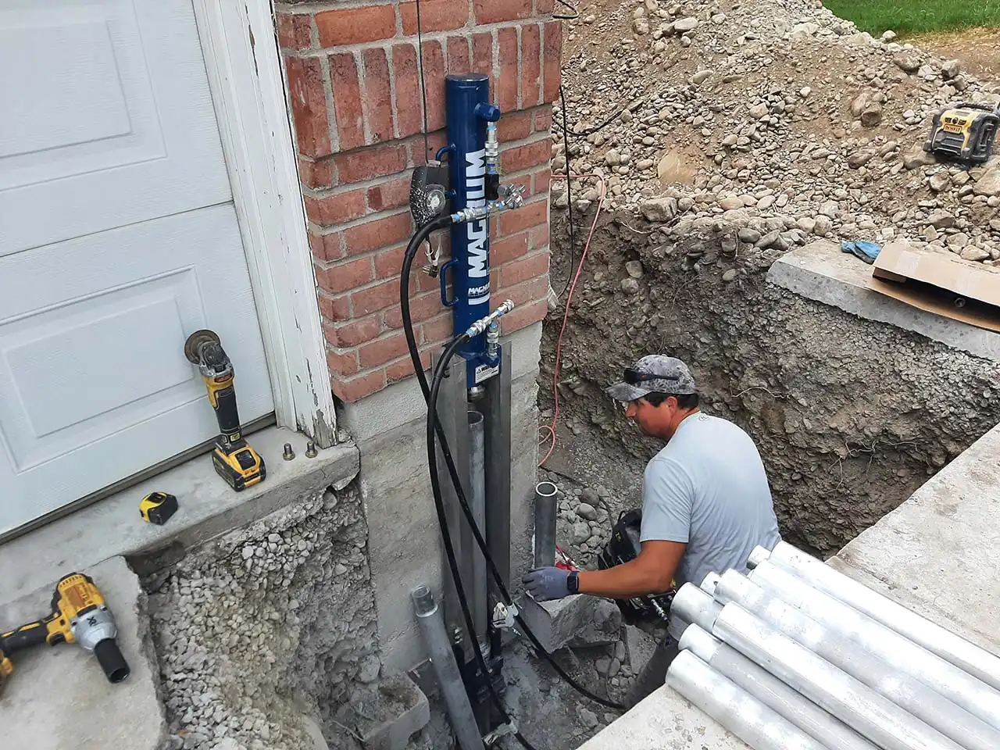
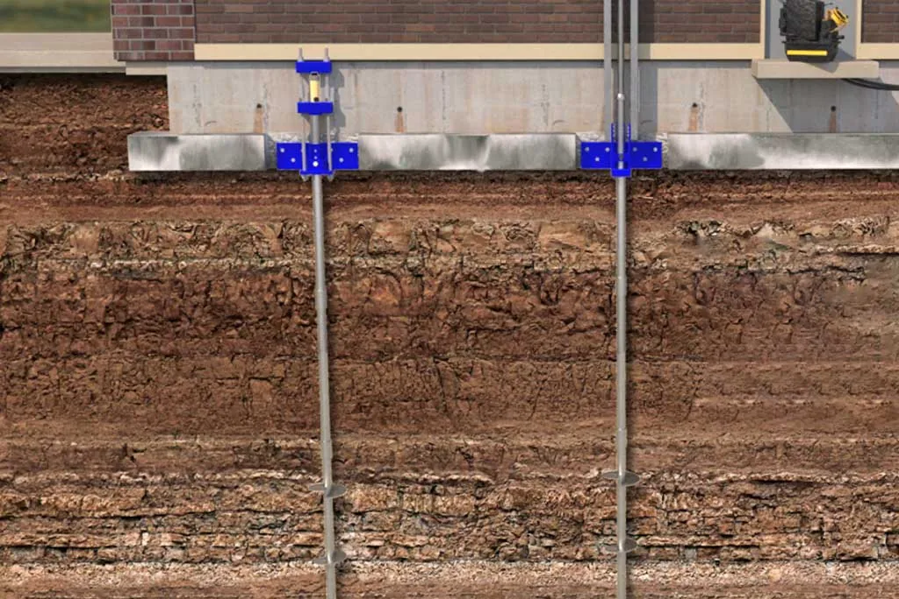
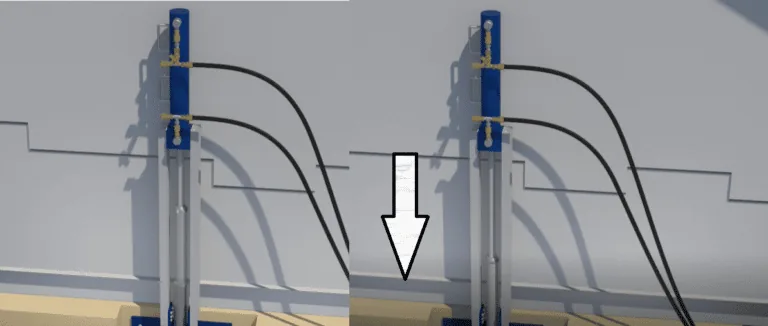

Share this Article
It sounds alarming, but it’s incredibly normal for any home to move a bit as it settles into the ground. Over time, the weight of your home causes the ground beneath to compress. The weather can also cause changes in the soil, which may cause your home to shift and settle a bit. Most houses will settle into the ground by about an inch during the first 3 to 10 years after it is built.
However, there is a big difference between slight settling and a sinking foundation. If your foundation is sinking further into the ground than just a few inches, it could compromise its entire structural integrity. This eventually could cause huge cracks to form, and your entire home could even collapse!
Thankfully, sinking foundation repair is possible under most circumstances if the problem is caught early enough. Here’s what homeowners need to know about the causes of foundation sinking, signs to look out for, and what to expect from sinking foundation repairs.
As mentioned before, most homes will settle into the ground a bit as the soil beneath compresses or shifts. The ground below may also expand if there is high moisture content (such as after heavy rains) or high humidity.
The material of your foundation may also impact how much it settles or whether it starts to sink. Cinder blocks will expand and compress when the temperature changes, making this material more susceptible to sinking.
Erosion is also the main culprit for sinking foundations. Heavy rains, melting snow, and flash floods can shift the ground beneath as soil is swept away. If your home is at a drainage point (like the bottom of a hill or in a valley), the soil may become quite soft and oversaturated. Further, if you don’t have good drainage around your foundation, it will be more likely to sink over time.
It is important to note the differences between a damaged foundation and a sinking one. Both are serious issues – but they need to be repaired in different ways.
It is very important for homeowners to regularly inspect both the inside and outside of their foundation fairly regularly to look for signs of sinking or other damage.
Here are some of the additional signs that you require a sinking foundation repair:
Large Cracks in the Foundation Walls
Small surface cracks may start to form along the walls of your foundation for many reasons. But if you notice more cracks are starting to form and seem deeper than surface level, it’s a fairly good indication of a sinking foundation.
One thing to look for is the size and shape of the cracks. If they are wider at the top, this is a sign that part of your foundation is slipping away from the rest.
Uneven Flooring in Your Home
If part of your foundation is sinking, it will impact the rest of your home. The chances are that your foundation will not sink evenly, so one part will be lower than the other. This leads to uneven flooring, which may be quite subtle at first.
You can check if your floors are uneven by using a bubble level tool and laying on top of your flooring. Another way to check is by laying a round object like a marble on your floor and seeing which direction it tends to roll in. If it keeps rolling the same way, it’s a sign that the floor is more sunken down in that area.
Trouble Opening Doors and Windows
Now, there are lots of reasons why a door or window may be “sticky” and hard to open. High humidity levels can cause the wood to expand, or a poorly constructed frame could just cause it. But a settling and sinking foundation can also be the root cause of this problem.
As the foundation calls, it will change the angle of the door and window frames. Even a slight shifting can make it quite hard to open a door or window as easily as before.
Cracks in the Interior Walls
If there are any sudden changes to your foundation level, the cracks can extend up through the walls of your home. Again, not all wall cracks are caused by foundation issues – they can be a result of poor construction or excessive moisture. But if you notice several cracks forming on your walls (especially above doors and windows), you should consider having your foundation inspected.
Suddenly Bursting Pipes
The plumbing in your home (especially in the basement) can also be affected by a sinking foundation. As the foundation moves, it will place pressure on the pipes, which could cause them to crack or break altogether.
Of course, this can lead to a slew of related issues like flooding, water damage, and even mold growth. If you have a pipe that suddenly bursts, have your foundation inspected once the plumbing is repaired.
The very first step you should take if you are worried about foundation issues is to have a professional inspect your home. Inspectors will use levelers and other tools to see how far your foundation has moved and try to determine the cause of the movement.
Next, they will come up with a solution to address the issue. Three options can be used to repair a sinking foundation: Helical Piles, Push Piers, and Polyurethane Foam.
Helical Piles for Sinking Foundation Repair
Helical piles (also called helical screws, screw cylinder anchors, and helical piers) are long metal stakes with a variety of gauges that are screwed into the ground. These can be inserted through the foundation to provide support as they land on a more stable surface, like bedrock. Some homes are built with helical piles already in the foundation for added support. But they can be added after construction to correct damage and repair sinking foundations.
First, the foundation will need to be exposed so the helical piles can be inserted. Depending on how deep it reaches, the ground around the foundation may need to be removed. The piles are then drilled into the ground at a slight angle then pushed vertically, so it pushes up against the foundation.
Once the pile is inserted deep enough for a stable base, it is secured to the foundation with brackets and bolts. The ground around the foundation can then be added back.
Now, it should be noted that helical piles offer support to prevent the foundation from slipping further. It will not necessarily correct any slippage that has occurred. So, this solution works best for homes with only slight movement.
Push Piers for Sinking Foundation Repair
Push piers are similar to helical piles, but these are not as invasive as they use hydraulic pressure rather than large machinery for insertion. They are also more durable and stronger than helical piles, so they can be used to support larger structures like multi-story homes.
Again, push piers may only be used for added support for a home with minimal damage from a sinking foundation. These will stop the foundation from sinking any further, so it is a viable option if the sinking foundation is caught early enough.
Polyurethane Foam for Sinking Foundation Repair
If the foundation has sunk a considerable amount, it will need to be leveled out before additional structures like helical piles or push piers can be added. Polyurethane foam is the preferred method to relevel concrete foundations that have cracked or slipped.
This high-pressure foam is added beneath the foundation through extremely small holes. Once the foam comes into contact with air, it expands significantly, creating enough pressure to push the foundation back into place.
Polyurethane foam is also commonly called Poly-Lift or Polyjacking, and it can be used to repair sidewalks, roads, driveways, decks, and even large buildings weighing millions of pounds. Since it is made of synthetic materials, it does not erode and can be a permanent solution to repair a sinking foundation.
Poly-Lifting can be completed in just a few hours, and the foam can be completely dry within a day. This may be done first to level out the sunken foundation, and then helical piles or push piers can be inserted to prevent the issue from happening again.
If you have a sinking foundation on your home, you need to act as quickly as possible. The sooner to address the issue, the easier it will be to repair and prevent further damage.
Poly-Lift has helped hundreds of homeowners in the Logan, UT area repair their sinking foundations by leveling, lifting, and supporting safely and securely. We offer a variety of options depending on your home’s needs.
How Much Does It Cost to Repair a Foundation?
When homeowners start to notice signs of foundation damage, acting quickly is essential. Even small cracks and signs ...
Insulating Concrete Block Walls with Core Foam Masonry Foam Insulation®
Concrete block walls are a popular choice for both commercial and residential construction projects due to their strength, ...
Sealing Concrete Driveways and Patios: What Do You Need to Know?
Concrete is an extremely strong, durable, and versatile material that is used in construction all over the globe. ...
From our jobs




